Character gallery
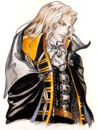
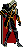
Alucard - Dracula's son who has awoken to face a threat from his father.
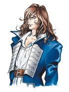
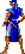
Richter Belmont - Hero who defeated Dracula five years ago, he went missing 1 year ago.
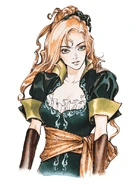
Maria Renard - Helped Richter defeat Dracula five years ago. Went to search for him.
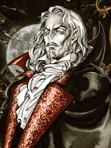
Dracula - The lord of darkness and final boss. Shaft revived him
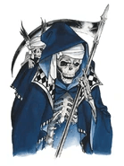
Death - Dracula's closest ally. Confronts Alucard about his betrayal.
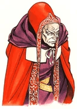
Shaft - Dark priest who manipulates Richter and seeks to revive Dracula.
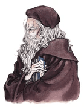
Master Librarian - Librarian and serves Dracula, helps Alucard for a reward.
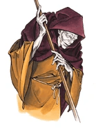
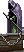
Ferryman - Has been a guide to heroes coming to Dracula's Castle for centuries.